1. 摘要
一句话结论：另一个智能体值不值得调用，取决于它能否把当前这个候选答案从错改对。按这个边际价值来度量和学习委派，一次选对的调用就能拿到大部分可测得的增益，学到的策略每题只用约半次调用。
系统里有一个可训练的 manager（Qwen3.5-9B）和三个冻结的子智能体（Extractor、Reasoner、Verifier，代码中叫 advisor）。每一轮 manager 先写下候选答案（代码中的 DRAFT_ANSWER），然后二选一：提交，或者委派给一个还没用过的子智能体。子智能体只返回结构化信号，不给答案。只有 manager 被微调。
MARGENT 分两步。采集：从 manager 自己生成的同一个推理状态出发，分别强制「提交」和「委派给每个子智能体」，比较最终答案的对错，得到每次委派的边际价值。蒸馏：把最短的成功路径变成 manager 的监督数据。
结果：四个推理 benchmark 上，选对的一次委派平均拿到可测得 oracle（事后最优）增益的 91.7%。在与采集集不相交的评测上，学到的策略比自己委派前的候选答案高 17.1 pp，每题只调用 0.53 次。
待确认 表示现有文件无法确定、需要作者补充的事实。
最好的一次委派占「直接提交 → 测得 oracle（事后最优）」全部增益的比例。采集集。
四个与采集集不相交的评测，宏平均 50.6% → 67.7%。其中 MedQA、MMLU-Pro、AQuA-RAT 为锁定评测；GPQA-Diamond 100 同时是它的开发池。
同样四个评测上的平均子智能体调用次数（宏平均 0.526）。
一次选择性调用与强制三次调用准确率相同。开发集诊断。
1.03 次调用高于 3 次强制调用 5.9 pp。开发集诊断。
对照诊断，不是 MARGENT 的方法。从 MARGENT 的 SFT checkpoint 出发，只用结果奖励、无调用惩罚继续训练，策略退化为几乎每题三次调用。两次运行没有准确率记录。附录 D。
五条关键发现（论文的）
- 可回收的价值集中在第一次选对的委派。Gain@1 在三个任务上超过 90%，宏平均 91.7%。第二次调用只多 0.5–4.5 分；在两个深度 3 的采集集上，第三次调用增加恰好为零。采集集
- 一次调用的价值取决于调用谁。净边际价值 = 救回比例减损坏比例。同一个 Reasoner 在 MedQA 是 +6.8 pp，在 AQuA-RAT 是 −4.3 pp。Extractor 在四个任务上都接近零或为负。Verifier 均值最大，但不能替代其他角色：12 道 MedQA 和 9 道 MMLU-Pro 题被 Reasoner 救回而 Verifier 救不回。采集集
- 学到的策略在四个与采集集不相交的评测上都高于自己的候选答案：宏平均 +17.1 pp，0.526 次调用 / 题。其中 GPQA-Diamond 100 同时是它的开发池，不是独立的锁定集。论文自己的限定：这是同一 scaffold（带子智能体工具的推理框架）内的端到端差异，不是相对独立单模型基线的增益。不相交评测
- 约一次选择性调用 ≈ 三次强制调用。操作点 = 一个训练好的 checkpoint 在开发池上得到的「调用次数、准确率」这一对数字。选出的操作点宏平均 73.2%@1.03 次，强制全部三个子智能体 73.6%@3.0 次。MMLU-Pro 持平（71.5%），AQuA-RAT 反超（81.1% vs 75.2%），GPQA 仍落后 6.0 pp。开发集诊断
- 候选答案本身对委派有用；只看结果的 RL 会学成「全都调用」。AQuA-RAT 上只把传给 Verifier 的候选答案置空，准确率 81.1% → 74.0%。开发集诊断 反过来，从 MARGENT 的 SFT checkpoint（论文只称其为「选择性 SFT」checkpoint，没有进一步说明；按本快照 results/README.md，8B 运行是从同状态采集蒸馏出的 SFT 继续训练）出发、只用终端正确性奖励的 GRPO 继续训练，8B 与 9B 分别走到 2.98 和 3.00 次调用 / 题。这两次运行没有准确率记录，所以只能说明调用行为，不能说明准确率损失。附录 D 诊断；论文只说明是 MedQA，没有给出评测切分和题数。
本阶段产出
- 论文投稿：NeurIPS 2026 投稿稿《MARGENT: Measuring the Marginal Value of Delegation in Agentic Systems》，匿名；前 12 页为正文、参考文献和附录 A–E，其余为 checklist。
- 代码整理：
supplementary_code/。README 按论文重写并附「论文 ↔ 代码」术语对照表；results/main改名results/predecessor_scaling；docs/EXPERIMENTS.md加范围说明（GRPO 只是诊断）；论文图 1 入库。清理细节见 §6。 - 页面：英文项目页
index.html、本报告、static/data/paper_tables.json（论文全部表格的转录，是页面图表的数据来源）。
2. 论文方法概述
2.1 问题
多智能体系统靠多次交互换准确率。但每次交互都要额外计算，还会引入新的失败路径：子智能体可能重复已有工作、给出不一致的证据，或者把一个正确答案改错。现有的选择性方法大多按问题特征、团队结构或模型置信度来决定要不要交互。这些信号不直接比较「从当前推理状态出发，提交和委派各自会得到什么结果」。低置信度的答案未必有谁能修好，高置信度的答案也可能含有别人能查出的错。论文要回答的问题是：什么时候再加一份智能是值得的？
2.2 决策接口
第 t 轮的状态是 s_t = (x, h_t, ŷ_t, U_t)：问题、交互历史、manager 当前的候选答案、已经用过的子智能体集合。动作空间是
u_t ∈ {commit} ∪ {delegate(a) : a ∈ A \ U_t}。（论文式 1）
提交就结束，ŷ_t 成为最终答案。委派把子智能体的输出加进历史，manager 修订候选答案，再决定一次。每个子智能体最多调用一次，所以一条轨迹最多 3 次委派。
| 子智能体 | 返回什么 | 接收什么 |
|---|---|---|
| Extractor | 与决策相关的事实及其极性 | 问题与上下文 |
| Reasoner | 问题分解、缺失的推理步骤 | 问题与上下文 |
| Verifier | 对当前候选答案的审计 | 问题与上下文，加上 manager 当前的候选答案 |
两个实现细节。子智能体输出有缓存，缓存键包含完整输入，所以 Verifier 对不同候选答案的审计不会串用。子智能体的训练数据由教师模型合成，经过 schema 校验和答案泄漏检查。
2.3 边际价值的定义
令 C(s_t, commit) ∈ {0,1} 表示直接提交当前候选答案是否正确。一步委派探针：强制 manager 委派给 a，把它的输出给 manager，再强制 manager 修订并提交，不再委派；记这条分支的正确性为 C(s_t, delegate(a))。于是
Δ(s_t, a) = C(s_t, delegate(a)) − C(s_t, commit) ∈ {−1, 0, +1}。（论文式 2）
+1 是救回，0 是没变，−1 是损坏。边际价值同时取决于当前状态和被调用的子智能体，而不只是问题或子智能体本身。它度量的是「调用、修订、提交」整个操作在固定修订协议下的效果，不是子智能体能力的内在度量。
2.4 同状态干预采集
- 每道训练题先由温度 0 的 manager 不委派地生成根候选答案。从这个共同的根状态，采集器强制「直接提交」和「委派给每个可用子智能体」。
- 按广度优先枚举不重复子智能体的有序序列，最大深度 D ≤ 3。三个子智能体一共 16 个有序序列（含直接提交）。
- 根候选答案错误：评估完当前深度的所有序列；只要这一层有成功，就停止，并保留所有等长的成功序列。整层都失败则继续到下一层，直到深度 D。
- 根候选答案正确：只评估一步委派，因为直接提交已经是最短成功轨迹；这些分支留作损坏分析。
- 标准答案只用来给终端分支打分，从不展示给 manager 或子智能体。
根状态由 manager 自己生成，后代状态来自强制干预。这样比较的是同一个 manager 状态下的不同动作，包括当前策略本来不会选的动作，避免只在「策略已经委派的那些题」上估计子智能体的价值。式 2 只度量一步委派后立即提交的效果；一个第一步 Δ = 0 的动作仍可能是成功两步序列的开头，这类动作由下面的序列准则选中，而不是由一步 Δ 选中。
2.5 边际价值蒸馏
令 Σ(s) 为已评估的委派序列集合（含空序列 ε），c_σ 为序列 σ 的最终正确性。最短成功序列集合 Σ*(s)（论文式 3）：
| 根候选答案 | 采集到的分支 | 蒸馏目标 |
|---|---|---|
| 正确 | 只展开一步，用于损坏分析 | 直接提交（Σ* = {ε}） |
| 错误，在深度 d 首次出现成功（d = 1、2 或 3） | 停在深度 d，保留该层所有成功序列 | 从这些最短成功序列中按该题固定的种子均匀抽一条（论文式 4）：d 次调用后提交。本报告 §4.1（论文表 1）的 Gain@1 显示绝大部分救回出现在深度 1 |
| 错误，到深度 D 都没有成功 | 所有层都评估完 | 无标签（Σ* = ∅）：既不教提交，也不教委派 |
每条选中的轨迹在经过的每个状态上产生一个监督决策，最后是提交目标。为了不让「根已经正确」的题占满训练集，提交轨迹的数量被限制在救回轨迹数量的 ρ 倍以内；这个上限 ρ 就是提交/救回比，是数据构造超参数，第 4 节扫描它。SFT 更新完整的 manager，所以它既改动作选择，也改调用后的修订；候选答案到最终答案的增益是端到端的，不只是路由效应。分支在 SFT 前采集，SFT 后不重新采集。
2.6 为什么不用每次调用惩罚
终端正确性奖励分不清「直接提交」和「多余的委派」，两条路都对时它们得分一样。每次调用惩罚则引入一个随任务变化的准确率与资源之间的汇率。MARGENT 改用字典序偏好：先看正确，正确的里面再看调用少；不需要给正确性和调用次数定一个数值换算率。ρ 仍然控制保留多少直接提交的监督。
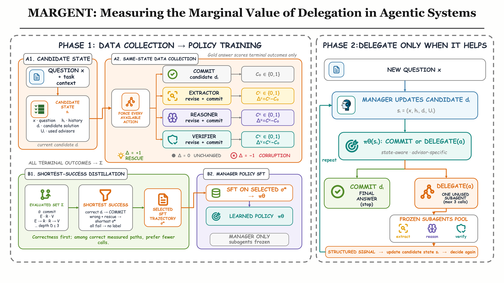
3. 实验设置
| 项目 | 设置 |
|---|---|
| Benchmark | MedQA（医学）、MMLU-Pro（广泛知识）、GPQA（科学）、AQuA-RAT（数学），都是多选题 |
| 采集集规模 | 每个任务 400 个根状态，GPQA 200 个 |
| 开发池（策略开发） | MedQA 200、MMLU-Pro 200、AQuA-RAT 254、GPQA 100 |
| 锁定评测 | 固定深度、ρ 和 checkpoint 之后只跑一次：MedQA 500、MMLU-Pro 500、AQuA-RAT 254。GPQA 没有单独的锁定集：GPQA-Diamond 100 与它的 446 题采集池不相交，但就是上一行的 GPQA 开发池（论文称诊断池） |
| Manager | Qwen3.5-9B |
| 子智能体 | 同一模型系列上的三个冻结的角色 LoRA |
| 解码 | 干预探针和子智能体调用都用贪心解码 |
| 搜索深度 | MedQA、AQuA-RAT 深度 3；MMLU-Pro、GPQA 主采集深度 2 |
| 提交/救回比 ρ | 在有记录的地方扫描 {0, 0.5, 1, 2, 3}。ρ = 0 只保留救回状态，这时策略几乎每题都委派；ρ 越大，保留的「直接提交已正确」的状态越多 |
| 锁定 checkpoint | MedQA sft_3.0_s1（取离复现配置均值最近的种子，不是最好的种子，论文附录 A）、AQuA-RAT sft_1.0、MMLU-Pro sft_2.0、GPQA sft_2.0 |
| 无法救回的根状态 | MedQA 31/400、AQuA-RAT 51/400、MMLU-Pro 106/400、GPQA 61/200；它们不产生路由标签 |
| 缺失的元数据 | 导出的实验记录里没有优化器、硬件、token 和延迟信息，所以资源只按子智能体调用次数计 |
比较对象与指标
- (i) 同一个 manager 在任何委派之前的候选答案；(ii) 强制调用一次 Verifier；(iii) 强制调用全部三个子智能体（按记录的 scaffold 顺序，没有单独的顺序扫描）；(iv) 测得的 oracle：每题选已评估序列中最好的一条。
- 指标：exact-match 多选准确率；平均子智能体调用次数；从配对结果算出的救回 / 纠正概率和损坏概率。
4. 论文结果
按论文 §4.2–4.5 的顺序。每个小节标明数据来源：采集集是训练题上的强制分支；开发集诊断是在开发池上、按验证集选出的操作点，论文明确说它们不是额外的留出测试；不相交评测是与采集集不相交的评测：MedQA、MMLU-Pro、AQuA-RAT 在固定 checkpoint 后只跑一次（锁定评测），GPQA-Diamond 100 同时是它的开发池。
4.1 一次委派之后还有多少价值可拿？采集集
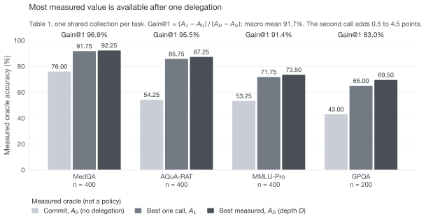
| 任务 | n | 直接提交 A0 | 最好一次调用 A1 | 测得最好 AD | Gain@1 |
|---|---|---|---|---|---|
| MedQA | 400 | 76.00 | 91.75 | 92.25 | 96.9% |
| AQuA-RAT | 400 | 54.25 | 85.75 | 87.25 | 95.5% |
| MMLU-Pro | 400 | 53.25 | 71.75 | 73.50 | 91.4% |
| GPQA | 200 | 43.00 | 65.00 | 69.50 | 83.0% |
| 宏平均 | – | 56.63 | 78.56 | 80.63 | 91.7% |
可回收的价值集中在第一次选对的委派。一次调用在三个任务上拿回测得增益的 90% 以上，宏平均 91.7%。第二次调用只多 0.5–4.5 分；在两个评估到深度 3 的主采集集上，第三次调用恰好多 0 分。GPQA 是例外：它的第二次调用多 4.5 分，在一个深度 2 的配置里 16% 的题调用了不止一次。GPQA 也是直接提交准确率最接近随机的任务，所以这个例外符合同一规律：第一个答案越弱，第二份意见还能加的越多。
4.2 一次调用的价值取决于调用谁采集集
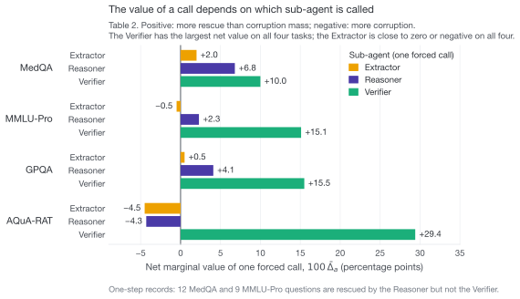
| 任务 | Extractor | Reasoner | Verifier |
|---|---|---|---|
| MedQA | +2.0 | +6.8 | +10.0 |
| MMLU-Pro | −0.5 | +2.3 | +15.1 |
| GPQA | +0.5 | +4.1 | +15.5 |
| AQuA-RAT | −4.5 | −4.3 | +29.4 |
范围很宽：同一个 Reasoner 在 MedQA 净值 +6.8，在 AQuA-RAT 是 −4.3；一个角色在一个任务上有用，在另一个任务上会直接损失准确率。Extractor 在四个任务上都接近零或为负。Verifier 均值最大，但不可替代：一步记录里有 12 道 MedQA 和 9 道 MMLU-Pro 题被 Reasoner 救回而 Verifier 救不回；而且对每道题都强制调用最强角色，仍会把调用花在已经正确的答案上。「总是调用 Verifier」是一条强的任务级规则，但表达不了状态级的「停下来」，也用不上少数需要其他角色的题。
另一个来自开发集的观察（不是采集集）：在较浅的 MMLU-Pro 和 GPQA 操作点上（论文只说 shallow，没有给出深度），学到的策略从不选择接近零价值的 Extractor。这说明蒸馏出的动作标签在推理时不看标准答案，也恢复了部分角色排序。
4.3 与采集集不相交的评测不相交评测
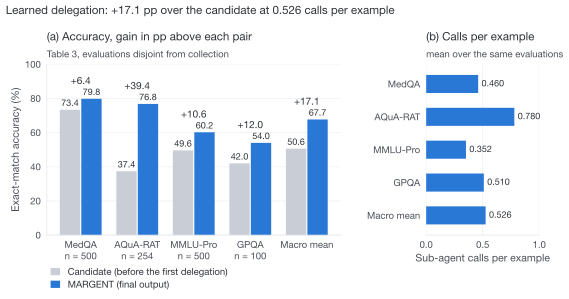
| 任务 | n | 候选答案 | MARGENT | 增益 (pp) | 调用 / 题 |
|---|---|---|---|---|---|
| MedQA | 500 | 73.4 | 79.8 | +6.4 | 0.460 |
| AQuA-RAT | 254 | 37.4 | 76.8 | +39.4 | 0.780 |
| MMLU-Pro | 500 | 49.6 | 60.2 | +10.6 | 0.352 |
| GPQA | 100 | 42.0 | 54.0 | +12.0 | 0.510 |
| 宏平均 | – | 50.6 | 67.7 | +17.1 | 0.526 |
四个评测上 MARGENT 的最终输出都比同一个训练后 manager 委派前的候选答案准确，宏平均高 17.1 pp，每题 0.53 次调用。
因为 SFT 更新的是完整的 manager，这是同一 scaffold 内的端到端差异，不是只由路由造成的因果效应，也不应读成相对一个独立提示的单模型基线的增益。这一点在 AQuA-RAT 上尤其重要：带工具的 scaffold 给出的候选答案明显弱于单独的 plain-answer（直接作答）提示。
4.4 更少的调用，同样的准确率开发集诊断
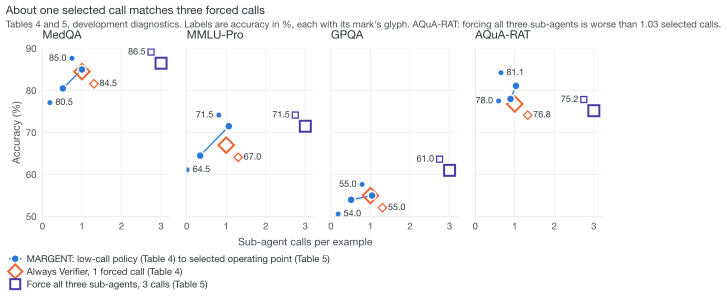
| 任务 | MARGENT 准确率 | 调用 | 总是 Verifier 准确率 | 调用 | 少调用 (%) |
|---|---|---|---|---|---|
| MedQA | 80.5 | 0.517 | 84.5 | 1.0 | 48.3 |
| MMLU-Pro | 64.5 | 0.340 | 67.0 | 1.0 | 66.0 |
| GPQA | 54.0 | 0.510 | 55.0 | 1.0 | 49.0 |
| AQuA-RAT | 78.0 | 0.894 | 76.8 | 1.0 | 10.6 |
| 宏平均 | 69.3 | 0.565 | 70.8 | 1.0 | 43.5 |
低调用的 MARGENT 策略比「每题强制调用一次 Verifier」少用 43.5% 的调用（宏平均 0.565 vs 1.00 次），准确率宏平均低约 1.6 分（论文正文数字；表中为 69.3% vs 70.8%）。拿 Verifier 做基线，是因为表 2 显示它是均值最强的角色，比「不调用」或「全调用」更有参考价值。MedQA 行用三种子均值，而不是更好看的那次 82.0%@0.405 运行。
记录中的强制 Verifier 实现没有把同一个委派前的候选答案传给 Verifier。所以它是一个强的操作基线，不是完全匹配的路由消融。
表 5 换一组操作点。表 4 用的是低调用的 MARGENT 策略；表 5 用的是记录中准确率最好的操作点，调用约 1 次 / 题。两组都是 MARGENT 蒸馏出的 manager。论文没有说明两组操作点对应的 checkpoint 关系；数值上，表 5 的 MedQA 85.0%@1.000 与表 9 中 MedQA 深度 2、ρ = 0 的一端相同。
| 任务 | 选出的 MARGENT 准确率 | 调用 | 强制全部准确率 | 调用 | Δ 准确率 |
|---|---|---|---|---|---|
| MedQA | 85.0 | 1.000 | 86.5 | 3.0 | −1.5 |
| MMLU-Pro | 71.5 | 1.065 | 71.5 | 3.0 | 0.0 |
| GPQA | 55.0 | 1.040 | 61.0 | 3.0 | −6.0 |
| AQuA-RAT | 81.1 | 1.031 | 75.2 | 3.0 | +5.9 |
| 宏平均 | 73.2 | 1.034 | 73.6 | 3.0 | −0.4 |
在每题约一次选择性调用的操作点上，MARGENT 与强制调用全部三个子智能体基本持平。最好的记录操作点宏平均 73.2%、1.03 次调用；强制全部 73.6%、3.0 次调用。调用减到三分之一，准确率只低 0.4 分。差距集中在 GPQA：强制全部高 6.0 分；MedQA 上强制全部高 1.5 分。MMLU-Pro 是最干净的效率结果：1.07 次选择性调用与三次强制调用都是 71.5%。AQuA-RAT 说明调用更多可能有害：1.03 次选择性调用 81.1%，强制全部 75.2%。
学到的策略下的救回与损坏
术语：采集集上的「救回」和学到的策略下的「纠正」是同一件事，都指候选答案错、最终答案对；「损坏」指候选答案对、最终答案错。
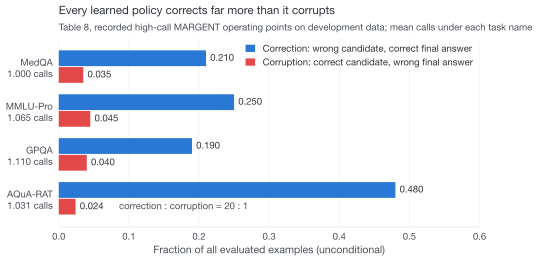
| 任务 | 调用 / 题 | 纠正 | 损坏 |
|---|---|---|---|
| MedQA | 1.000 | 0.210 | 0.035 |
| MMLU-Pro | 1.065 | 0.250 | 0.045 |
| GPQA | 1.110 | 0.190 | 0.040 |
| AQuA-RAT | 1.031 | 0.480 | 0.024 |
只看准确率会掩盖委派的两个相反效果。每个策略的净值都为正，但比例差别很大：AQuA-RAT 纠正了 48.0% 的题、损坏 2.4%，二十比一；GPQA 纠正 19.0%、损坏 4.0%。这解释了为什么高 oracle 不能单独证明「全都调用」是对的：oracle 只保留成功分支，而可执行的策略要承担自己的错误。
4.5 策略是否在正确的状态上调用？开发集诊断
调用差只用于分析，需要标准答案：P(委派 | 候选答案错) − P(委派 | 候选答案对)。在选出的开发集操作点上，四个任务的调用差都为正：MedQA 0.381、MMLU-Pro 0.296、GPQA 0.067、AQuA-RAT 0.102。GPQA 的小调用差与它较弱的策略结果一致：候选答案难以区分时，manager 接近无差别调用。调用差为正本身不能证明策略预测了「某个具体子智能体」的边际价值。
更严格的检验是匹配预算重放：固定调用的角色和调用次数，把题目随机重抽 2,000 次，得到随机选择下的 95% 区间；再看策略自己选中的那批题的准确率是否高于这个区间。MedQA 上策略选中的子集达到 82.0%，高于随机区间 [75.0, 81.0]；MMLU-Pro（59.5% vs [54.0, 60.5]）和 GPQA（51.0% vs [44.0, 53.0]）在区间内。「优于随机选择」的证据最强在 MedQA；这个检验分不开「用了候选答案」和「题目难度」两种解释。
| 任务 | 选项数 K | 候选答案 | 余量 | 调用差 |
|---|---|---|---|---|
| MedQA | 4 | 0.685 | 0.435 | 0.291 |
| MMLU-Pro | 10 | 0.560 | 0.460 | 0.225 |
| AQuA-RAT | 5 | 0.390 | 0.190 | 0.152 |
| GPQA | 4 | 0.420 | 0.170 | 0.017 |
这张表不确立候选答案准确率与选择性之间的因果关系。它记录的是一个实际的失败边界：GPQA 的候选答案只比随机高 17 分，策略的调用差在数值上接近无差别调用，而且样本太小，分辨不出小的差别。按这些代表性操作点看，调用差在 GPQA（0.017）和 AQuA-RAT（0.152）最小，在 MMLU-Pro（0.225）和 MedQA（0.291）较大。这是描述性规律：候选答案接近随机时，选择性调用更难。
4.6 提交样本控制「调用 / 停止」的权衡开发集诊断
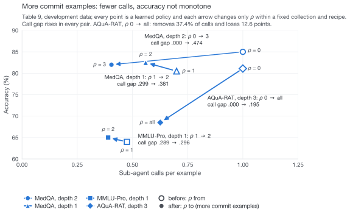
| 任务 / 采集集 | ρ | 准确率 | 调用 / 题 | 调用差 |
|---|---|---|---|---|
| MedQA 深度 2 | 0 → 3 | 85.0 → 82.0 | 1.000 → 0.405 | .000 → .474 |
| MedQA 深度 1 | 1 → 2 | 80.5 → 82.5 | .700 → .560 | .299 → .381 |
| MMLU-Pro 深度 1 | 1 → 2 | 64.0 → 65.0 | .475 → .390 | .289 → .296 |
| AQuA-RAT 深度 3 | 0 → all | 81.1 → 68.5 | 1.000 → .626 | .000 → .195 |
ρ 是每一对里唯一改变的数据构造变量。保留更多提交样本在每一对里都降低调用率；调用差通常同时上升，也就是剩下的调用更集中在错误的候选答案上；但准确率不单调。激进的 AQuA-RAT 比较去掉了 37.4% 的调用，也丢了 12.6 分。所以 ρ 是对策略行为的透明控制，不是免费的效率提升。
4.7 候选答案对委派的调用重要吗？开发集诊断
| 指标 | 传入候选答案 | 置空候选答案 |
|---|---|---|
| 准确率 (%) | 81.1 | 74.0 |
| 纠正（全部题目中的比例） | 0.480 | 0.409 |
| 损坏（全部题目中的比例） | 0.0240 | 0.0236 |
核心机制预测：子智能体的价值可能取决于它收到的答案，而不只是问题。去掉候选答案后准确率从 81.1% 降到 74.0%，纠正从 0.480 降到 0.409，损坏基本不变。所以候选答案是委派计算的有用审计对象。论文的限定：这次运行的路由是固定的，所以这个干预本身不能说明路由器用候选答案来决定要不要调用。
5. 附录诊断
本节的两组结果来自论文附录 B 和 D。它们是动机性诊断，不是主结果：GRPO 不是论文的方法；4B/8B/9B 的表格是在边际价值实验之前做的前期实验。本快照保存的结果文件只覆盖这两组诊断，不包含论文表 1–5 的 9B 主实验记录。
5.1 只用结果奖励的 GRPO 退化到三次调用（附录 D）
| 运行 | 调用 / 题 | 准确率 | 观察到的行为 |
|---|---|---|---|
| MedQA，8B manager | 2.98 | – | 接近全部三次调用 |
| MedQA，9B manager | 3.00 | – | 全部三次调用；答案很晚才给出 |
作为参照，一个固定的 MedQA MARGENT SFT 配置另外三个种子的结果是 80.5 ± 1.0 准确率、0.517 ± 0.043 次调用（均值 ± 标准差）。论文附录 A 说锁定 checkpoint sft_3.0_s1 取的是离「复现配置」均值最近的种子；论文没有说明这个复现配置是否就是上述三种子配置，也没有说 GRPO 继续训练是否从它出发。其余任务级比较都是单次运行。
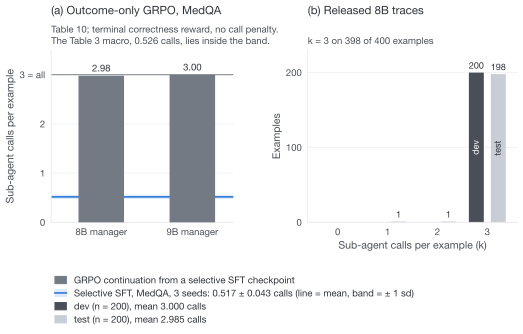
本快照中保存的 8B 轨迹（results/medqa_marginal_v1/）
results/README.md 把这组文件对应到附录 D 的「MedQA，8B manager」运行：Qwen3-8B manager，先做深度 1 的同状态干预采集，再从中蒸馏，然后用只看结果的 GRPO 继续训练（checkpoint 目录 grpo_binary_mv2）。test 的 2.985 次调用与表 10 的 2.98 一致；是否为同一个 checkpoint 仍待作者确认（§9）。它不是正文报告的 MARGENT SFT 策略。
| 指标 | Dev（n = 200） | Test（n = 200） |
|---|---|---|
| 候选答案准确率 % [Wilson 95%] | 55.5 [48.6, 62.2] | 63.5 [56.6, 69.9] |
| 最终准确率 % [Wilson 95%] | 67.5 [60.7, 73.6] | 76.5 [70.2, 81.8] |
| 纠正（错 → 对）/ 损坏（对 → 错） | 36 / 12 | 38 / 12 |
| McNemar p（候选答案 vs 最终） | 7.2e−4 | 3.1e−4 |
| 平均调用次数 | 3.000 | 2.985 |
| 调用次数分布 | {3: 200} | {1: 1, 2: 1, 3: 198} |
| 调用率（候选答案错 / 对） | 100% / 100% | 100% / 100% |
| 调用差 | 0 | 0 |
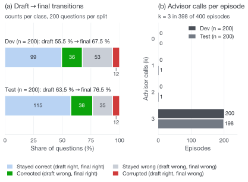
解读：子智能体确实有用，纠正数约为损坏数的 3 倍，准确率提升 12–13 pp，McNemar 检验显著。但策略没有学会停止：候选答案对和错时调用率都是 100%，调用差为 0，准确率提升来自「全部咨询」而不是「按需咨询」。test 的 2.985 次与论文表 10 的 2.98 一致。
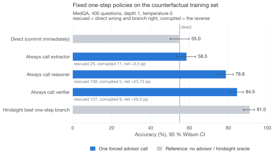
marginal_value_report.json）。直接提交 55.0%；总是调用 Extractor 58.5%（救回 25、损坏 11）、Reasoner 78.8%（100、5）、Verifier 84.5%（127、9）；事后最优的一步分支 91.0%。根候选答案直接正确 220 题，一次调用后救回 144 题，无标签 36 题；按 ρ = 1.0 的上限，蒸馏数据保留 144 条提交轨迹和 144 条一次调用轨迹（288 个决策）。首选子智能体 Verifier 86、Reasoner 51、Extractor 7。图中 advisor = 子智能体。这 400 道采集题与子智能体 SFT 的题目按题干 hash 重叠 400/400（采集命令没有传 --exclude_sft_example_ids）。子智能体在自己训练过的题上表现更好，所以图 10 的救回率和 +36 pp 的上界很可能偏高。dev / test 评测不受影响。整理后的文档已补上这个参数。
5.2 前期 4B / 8B / 9B 实验（附录 B）
论文表 6 的要点：最好的前期多智能体变体相对同规模 base 模型的增益在 9B 上明显缩小，9B GPQA 为零。这些实验做在边际价值实验之前。作者在最终四个任务中的三个上，用 Qwen3-4B、Qwen3-8B、Qwen3.5-9B 评估了冷启动、通用（Generic）和任务专用（Specific）的多智能体训练变体。开发集每任务 100–200 题。表 6 取每个（任务，规模）格子里最好的变体减去同规模 base。因为是跨多个变体取最大值，而且样本小，论文把它定位为「动机性张力的证据」，不是 scaling law，也不是主比较。
| 任务 | Qwen3-4B | Qwen3-8B | Qwen3.5-9B |
|---|---|---|---|
| MedQA | +16.5 | +20.0 | +4.0 |
| GPQA | +13.0 | +6.0 | +0.0 |
| MMLU-Pro | +30.5 | +22.5 | +10.5 |
| 宏平均增益 | +20.0 | +16.2 | +4.8 |
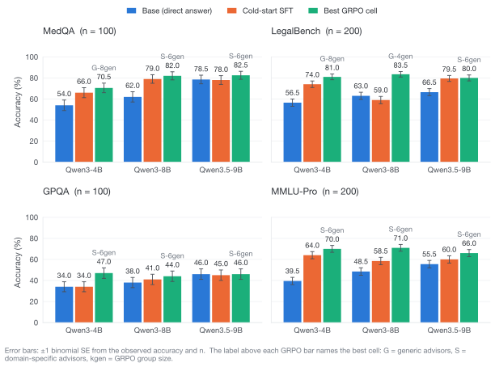
results/predecessor_scaling/main_results.json）：base 直答、冷启动 SFT、最好的 GRPO 格子，按 benchmark 和 manager 规模。误差棒 ±1 二项标准误。LegalBench 在图中保留，但论文已把它去掉；表 6 的数值等于每面板「最好 GRPO 格子」减「base」。图中 advisor = 子智能体；G = 通用子智能体，S = 任务专用子智能体，kgen = GRPO 组大小。从快照里的 28 个 GRPO 格子算出的统计（含 LegalBench）：相对 base 平均 +13.9 pp，相对冷启动平均 +4.8 pp；26 格高于 base，1 格持平，1 格更低。按规模，相对 base 的平均增益 4B +16.0、8B +14.2、9B +7.0。GRPO 低于自己冷启动的有 5/28 格，全是 Generic 条件：MMLU-Pro G-4B-8gen −15.0、GPQA G-8B-6gen −5.0、MMLU-Pro G-4B-6gen −5.0、MedQA G-8B-4gen −4.0、MedQA G-8B-6gen −2.0。噪声标尺：p = 0.5 时单个分数的标准误 n = 100 为 5.0 pp，n = 200 为 3.5 pp。
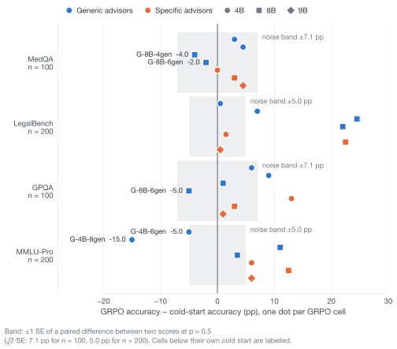
论文对这段历史的结论：只看结果的 GRPO 和额外的子智能体 SFT 都没有稳定地改善早期流程，而 manager 侧的冷启动 SFT 改善了大多数（任务，规模）格子。这些前期变体之间不止一个因素不同，所以论文不把它们当消融，它们的作用是促成受控的同状态采集。
6. 代码与数据现状
整理后的仓库位于 supplementary_code/；原 7.98/agent_routing 目录没有改动。代码早于论文的最终用词：代码里的 advisor 就是论文的子智能体，DRAFT_ANSWER_<X> 就是候选答案，最后的 ANSWER_<X> 行就是提交。所有 stage 都通过 python -m src.pipeline.cli <stage> 运行。
| 论文概念 | 代码 / CLI |
|---|---|
| 同状态干预采集，搜索深度 D | build_marginal_sft，--mv_max_depth {1,2,3} |
| 边际价值 Δ、救回 / 损坏 | marginal_value_report.json 中的 rescue_rate、corruption_rate、net_marginal_rate |
| 最短成功路径选择（式 3–4） | src/manager/marginal_value.py 中的 choose_preferred_sequence |
| 提交/救回比 ρ | --mv_max_commit_rescue_ratio（0 = 只保留救回；−1 = 保留全部提交） |
| 边际价值蒸馏（manager SFT） | train_manager_sft，输入 manager_sft_marginal.jsonl |
| 学到的委派或提交策略的评测 | eval_manager_tools；报告里 initial_draft_accuracy = 候选答案准确率，avg_tool_calls = 调用 / 题，correction_rate / corruption_rate |
| 强制一次 Verifier / 强制全部三个 | eval_manager_forced --eval_forced_tools verifier / extractor,reasoner,verifier |
| 调用差 | 评测报告里的 draft_conditioned_call_gap |
| 只看结果的 GRPO 继续训练（附录 D 诊断） | train_manager_grpo，scripts/train_manager_grpo_multigpu.sh |
快照缺什么
- AQuA-RAT 加载器。快照里只有 MedQA、MMLU-Pro、GPQA（以及论文没用的 LegalBench）的加载器。
- 论文表 1–5 的 9B 主实验记录。逐题分支和评测记录随论文的 dashboard 导出，不在快照中。快照里的两组结果只对应附录 B 和附录 D。
- 候选匹配的强制 Verifier 基线。论文记录中的强制 Verifier 没有把同一个委派前的候选答案传给 Verifier。快照里对应的 stage 是
eval_manager_forced；它是否传入候选答案，本次没有核实。待确认
数据隔离检查（按题干 hash 复核）
- 通过GPQA：子智能体 SFT 的 160 题与 eval100 无重叠，全部来自 train446 池。
- 通过MedQA：子智能体 SFT 的 600 题与 dev200 无重叠。
- 问题MedQA 8B 采集集：400 题全部包含在子智能体 SFT 数据中（400/400）。原因是采集命令没有传
--exclude_sft_example_ids；文档已修正。影响见 §5.1。
| 类别 | 处理 |
|---|---|
| 对齐论文 | README 按 MARGENT 重写，附「论文 ↔ 代码」术语对照表；results/main 改名 results/predecessor_scaling；docs/EXPERIMENTS.md 开头加范围说明（GRPO 只是诊断，不是主方法）；论文图 1 加入 docs/figures/margent_overview.png；results/README.md 说明两组记录分别对应附录 B 和附录 D |
| 冗余文件 | 删除 .bak / .bak_* / .DS_Store；删除依赖旧 rule_applier 流程的脚本 generate_openai_us4_all.py；删除一个名为 ZeRO-3 但内容与 zero2_ga2 完全相同的配置，把真正的 ZeRO-3 配置改名为 accelerate_zero3.yaml |
| 关键修复 | 原 .gitignore 忽略了 src/subagents/prompts/reasoner.py 和 runtime_prompts.py。这两个是核心 prompt 文件，直接推到 GitHub 的话仓库将无法运行。现已纳入仓库 |
| 代码清理 | routing_anchor.py 末尾追加的 monkey-patch 已并入 _render_chat。原补丁会把 tools 列表也当成消息处理，给每个工具 schema 加上 "tool_calls": null，从而改变 SFT-anchor 渲染出的 system prompt。新实现只处理消息。该路径只在 --mgr_sft_anchor_coef > 0 时启用，不影响主方法 |
| 匿名化 | LICENSE 作者改为 Anonymous Authors；脚本和文档里的集群用户路径改为 $VENV_DIR（默认 ./.venv）；$ACCELERATE_CONFIG 可覆盖 |
| 文档 | README 含方法、目录结构、安装、数据、完整 MedQA 复现流程和 stage 表；主协议放在 docs/EXPERIMENTS.md；ADC 方案归档到 docs/history/；build_marginal_sft 的命令补上 --exclude_sft_example_ids，排除子智能体 SFT 题目 |
| 结果 | results/predecessor_scaling/main_results.json（附录 B）；results/medqa_marginal_v1/（附录 D 的 8B 运行：采集记录、dev / test 逐题轨迹）；两个只依赖标准库的脚本 scripts/summarize_main_results.py 和 scripts/analyze_results.py（Wilson 区间 + 精确 McNemar），没有 GPU 也能复算 §5 的全部数字 |
| 未包含 | 数据集文件（由 loader 自动下载；GPQA 的条款不允许公开明文）、教师生成的 SFT 数据（203 MB）、内部规划文档 PAPER_READINESS.md |
| 验证 | 所有 .py 文件语法解析通过；10 个单元测试通过；shell 脚本 bash -n 通过；README 和 docs/EXPERIMENTS.md 中引用的每个 CLI 参数和 stage 名都与 cli.py 核对过 |
7. 局限与风险
前半部分是论文自己写明的局限和 checklist 中回答「No」的项；后半部分是快照层面的问题。状态列：支持 / 弱 / 未支持 或 缺失，表示这条结论目前有多少证据。
| 结论 / 风险 | 现有证据与限定 | 状态 |
|---|---|---|
| 选对的一次委派拿到大部分可测得增益 | 论文表 1，四个采集集，Gain@1 83.0–96.9%，宏平均 91.7%。上界只在枚举的动作序列内成立，不是对任意提示、模型或工具的上界 | 支持 |
| 学到的策略高于自己的候选答案，调用约 0.5 次 / 题 | 论文表 3，四个与采集集不相交的评测都为正（GPQA 行同时是其开发池，不是锁定评测）。但它是端到端差异，不是路由因果效应，也不是相对独立单模型基线的增益；AQuA-RAT 的 scaffold 候选答案弱于 plain-answer 提示 | 弱 |
| 一次选择性调用 ≈ 三次强制调用 | 论文表 5，开发集诊断，按验证集选出的操作点；MMLU-Pro 持平，AQuA-RAT 反超，GPQA 差 6.0，MedQA 差 1.5 | 弱 |
| 强制 Verifier 基线 | 记录中的实现没有传入同一个委派前的候选答案，是强的操作基线，不是匹配的路由消融 | 弱 |
| 策略在正确的状态上调用 | 四个任务调用差为正；匹配预算重放只有 MedQA 高于随机区间，MMLU-Pro 和 GPQA 在区间内；该检验分不开候选答案使用和题目难度 | 弱 |
| GPQA 上的选择性 | 候选答案只比随机高 17 分；调用差 0.067（选出的操作点）/ 0.017（表 7 代表性操作点）；强制全部仍高 6.0 分；n = 100 | 未支持 |
| 统计显著性 | 只有一个 MedQA 配置有三个种子（80.5 ± 1.0，0.517 ± 0.043）；其余任务级比较都是单次运行；checklist 第 7 项答 No | 弱 |
| 可复现性元数据 | 导出记录缺优化器、LoRA、提示词、硬件、token、延迟；checklist 第 4、6、8 项答 No。完整发布还需要稳定的 example id 和逐题输出 | 缺失 |
| 子智能体池与顺序 | 固定三个角色；强制全部用记录的 scaffold 顺序，没有顺序扫描 | 弱 |
| 8B 快照的采集集与子智能体 SFT 重叠 | 400/400 重叠，一步救回率偏乐观；只影响附录 D 的 8B 运行，不影响其 dev / test 评测 | 问题 |
| 主实验记录不在快照中 | 论文表 1–5 的 9B 逐题记录随 dashboard 导出；快照中无法复算这些表 | 缺失 |
8. 下一阶段计划（按优先级）
- 把 9B 主实验的逐题记录纳入发布包（checklist 和附录 E 的要求）：表 1–5 的分支与评测记录、提示词、LoRA 与优化器设置、每个 split 的稳定 example id、逐题输出。
- 补上 AQuA-RAT 加载器，让四个 benchmark 都能从快照跑通。
- 多种子与配对置信区间：主方法和最强基线各跑多个种子；用逐题输出做配对 bootstrap 或 McNemar 检验，而不是只报单次运行。
- 候选匹配的强制 Verifier 基线：把同一个委派前的候选答案传给 Verifier，得到匹配的路由消融。
- 独立的单模型基线：plain-answer 提示、self-consistency（多次采样投票，
eval_manager --eval_sc_k K），回应「端到端差异不是相对单模型基线的增益」这一限定。 - 子智能体顺序扫描：强制全部目前只用记录的 scaffold 顺序。
- token 与延迟统计：目前资源只按调用次数计。
9. 待确认
- 待确认9B 主实验用的代码版本与本快照（
7.98/agent_routing）的关系；快照里的grpo_binary_mv2与论文表 10「MedQA，8B manager」是否同一 checkpoint（调用次数一致，训练配置未核对）。待确认 - 待确认投稿是否双盲：决定 LICENSE 作者名和路径匿名化是否保留。待确认
- 已确认GitHub 仓库：github.com/Candy26i/MARGENT（代码在
main，本站点在gh-pages）。 - 待确认作者与单位：项目页目前是占位符。待确认
- 待确认论文 PDF 是否可以公开链接：项目页的 Paper 按钮目前禁用。待确认
- 部分确认论文附录 B 把 Generic / Specific 称为 generic / task-specific multi-agent training variants；「子智能体训练变体」这一解释来自快照的 results/README.md，论文本身未定义。
附录
A. 复现本报告中可复算的数字
以下命令只依赖标准库，不需要 GPU。它们覆盖 §5 的两组诊断；§4 的论文表格来自 static/data/paper_tables.json 的转录，其原始记录不在快照中。
cd supplementary_code
python scripts/summarize_main_results.py # 附录 B：28 个 GRPO 格子，论文表 6 的来源
python scripts/analyze_results.py results/medqa_marginal_v1 # 附录 D 的 8B 运行：Wilson 95% 区间 + 精确 McNemar
python -m unittest tests.test_marginal_value tests.test_routing_anchor
B. 文件清单
supplementary_code/results/predecessor_scaling/main_results.json：附录 B 的全部格子（含论文去掉的 LegalBench），只有汇总准确率。supplementary_code/results/medqa_marginal_v1/marginal_value_report.json：8B 运行的采集汇总（400 题，深度 1，ρ = 1.0）。supplementary_code/results/medqa_marginal_v1/counterfactual_records.jsonl：每题的直接候选答案、三个强制一步分支的完整轨迹、选出的最短成功目标。supplementary_code/results/medqa_marginal_v1/eval_dev200.jsonl、eval_dev200_report.json：GRPO 继续训练后的 manager 在 MedQA 官方 dev 前 200 题（example_id10178–10377）上的逐题轨迹与汇总。supplementary_code/results/medqa_marginal_v1/eval_test200.jsonl、eval_test200_report.json：同一 manager 在官方 test 前 200 题（example_id11450–11649）上的逐题轨迹与汇总。supplementary_code/scripts/summarize_main_results.py、scripts/analyze_results.py：上面两条命令的脚本。project_page/static/data/paper_tables.json：论文表 1–10 与正文数字的转录，页面图表的数据来源。project_page/static/data/main_results.json：附录 B 数据在页面侧的副本。